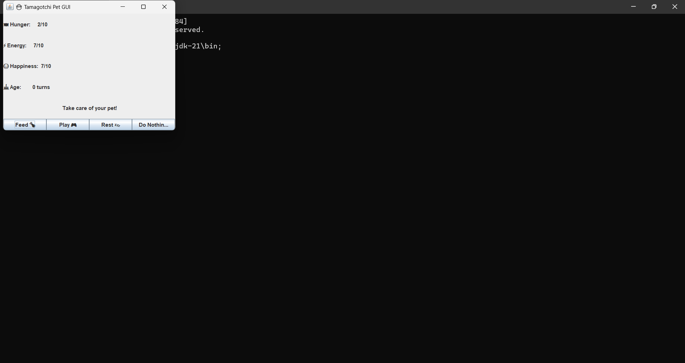

A fun and interactive Tamagotchi-style virtual pet game built using Java Swing. Feed, play, rest, or ignore your digital pet — but beware! If you neglect it, it might not survive.
Simulate a virtual pet's lifecycle and mood using basic object-oriented programming concepts and a clean graphical user interface (GUI).
| Java Concept | Usage |
|---|---|
| OOP (Classes, Objects) | Pet class with encapsulated data and behavior |
| Inner Classes | Pet is an inner class within TamagotchiGUI |
| Swing GUI (JFrame, JButton, JLabel) | Used for building a functional GUI |
| Layout Managers (BorderLayout, GridLayout) | For organizing GUI components |
| Event Handling | ActionListener to respond to button clicks |
| User Input | JOptionPane for naming the pet |
| Conditional Logic | To handle game rules, death conditions, and actions |
| Method Abstraction | All pet actions are modularized into methods (feed(), rest(), etc.) |
javac TamagotchiGUI.java
java TamagotchiGUIAfter every action (even skipping), the pet ages and stats decay:
The game ends if:
(Add a screenshot.png below this if you have one)
TamagotchiGUI.java: Entire code including GUI and logicscreenshot.png: Optional GUI previewSanskriti – Java enthusiast & beginner developer learning through building ✨